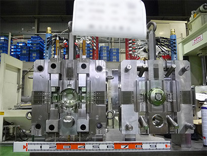
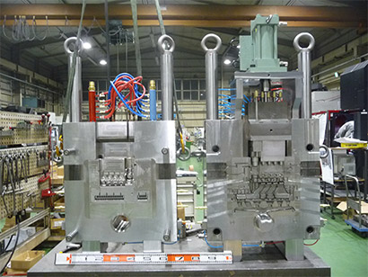
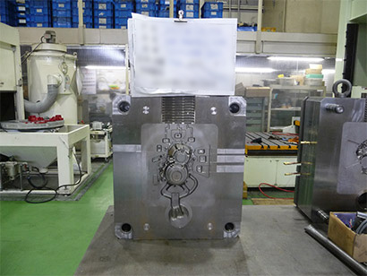
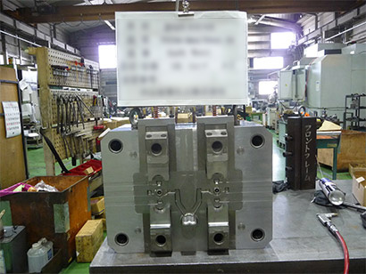
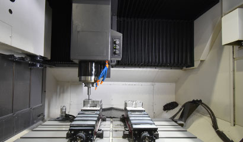
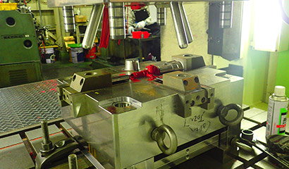
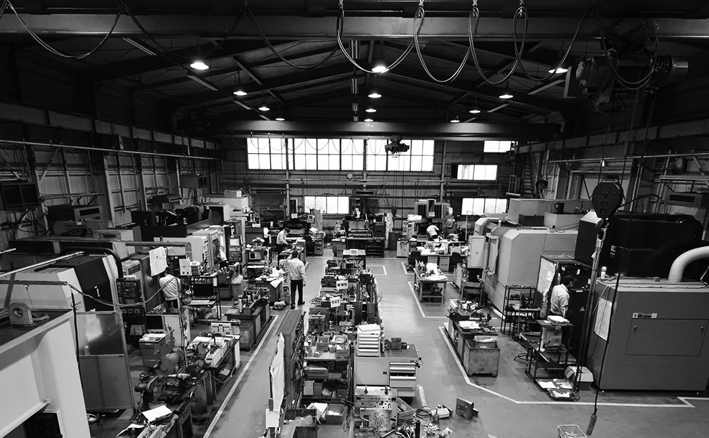

埼玉県戸田市・ダイカスト金型製作専業メーカー
13の工程を、
一社で通します。
ミナス精工は、車両部品をメインとするダイカスト金型製作専業メーカーです。見積から設計、材料手配、粗加工、熱処理、仕上げ、組み付け、ダイスポットでの確認、納品、そしてアフターサービスまで。工程を分けずに、一続きで管理します。
1977年の創業から、「高精度」「高品質」「低コスト」「短納期」を掲げてきました。図面データは秘密情報として保管しているため、スペアのご注文にも迅速に応じられます。

- 80〜500t対応するダイカスト型
- 10〜15式／月月産台数
- 1〜2か月打合せからの製作期間
- 1977創業（昭和52年）
対応範囲
受けられる仕事を、
先に書いておきます。
金型の大きさ
80t 〜 500t
中小型のダイカスト金型が中心です。鋳造機も80t〜500tに対応します。
生産キャパシティ
月産 10 〜 15 式
年間生産台数は110〜130式です。
製作期間
1 〜 2 か月
打合せから納品まで。仕様と数量によって変わります。
主要取扱品目
- 自動車部品型
- 光学部品型
- 電子無線型
- 空圧機器型
当社の特徴
品質・納期・価格を徹底追求
トラブルの起きない良質の製品を生む金型を作ります。
図面データを安全に保管
秘密情報として保管しているため、スペア等の注文依頼の際には迅速な対応ができます。
3Dデータソフトの活用
CAD・CAM・CAE を充実させています。
ビフォア／アフターサービス
お客様の受注獲得のためのビフォアーサービスと、納品後のアフターサービスにも万全を期しています。
業務フロー
見積から、
修理の相談まで。
金型づくりは工程が多く、どこかを外に出すと責任の切れ目ができます。当社が13の工程を通して管理しているのは、そのためです。
- 01
ご依頼
見積作成・引き合い
- 02
仕様決定
受注／納期決定
- 03
金型図面
2D-CAD（組図・部品図）、3D-CAD（形状モデリング）、流動解析（オプション）
- 04
材料手配
日立金属工具鋼、大同特殊鋼より。ご要望によりミルシート提出
- 05
粗加工
加工データ作成（2D-CAM、3D-CAM）、マシニング加工
- 06
熱処理
材料メーカー指定工場。ご要望により焼入れ成績書提出
- 07
仕上げ加工
研磨／電極／高速放電／高速マシニング
- 08
ベース仕上げ加工
縦型マシニング
- 09
仕上げ・組み付け
磨き、合わせ、組み付け、MK処理。金型表面層の均質化を図り、カエリ・白層・硬化層などの熱影響層やマイクロクラックといった、金型表面に残存する欠陥を研削処理します。続いてマイクロビーズのピーニング効果により、表面組織の緻密化や圧縮応力の付加を実現する研磨処理を実施し、金型の成型性・耐久性を向上させます。離型性の悪い金型に特に有効です。
- 10
形状確認
ダイスポッティングプレスによる金型機能確認（擦り合せ・スライド作動・油圧シリンダー作動確認）、冷却機能確認
- 11
納品・出荷
試作鋳造
- 12
改造・調整
湯口周り対策相談。ご要望により表面処理
- 13
アフターサービス
消耗部品（ブッシュ・スリーブ）、破損部品（鋳抜きピン・入駒等）を部品図面に保存しているので迅速手配が可能です。ヒートクラック、熔損等の修理およびご相談も承ります。ご要望により、ホットプレス、加工治具、各種治具製作も同時に製作いたします。
実績案内
つくれるもの、四つ。



ダイカスト金型
80t〜500tクラスの中小型ダイカスト金型の製作を、月産10式以上生産する生産キャパ。綿密な打ち合わせと緻密な設計から作られた精密な金型です。
ホットプレス
金型製作時に使用したデータを利用しているため、意図する形状との誤差が無いトリミング型が完成します。製作期間、コストも抑えることが可能です。
加工治具
社内で製作した金型であれば、ダイスポットプレスで樹脂の模擬素材がありますので、加工部位と工程の打ち合わせのみで加工治具の製作ができます。量産までの工数と時間を軽減させることが可能です。
流動解析
溶けた金属が金型内を流動、充填し、冷却、凝固していく過程をシミュレーションするシステムです。欠陥対策、問題の可視化ツールとして導入しています。
- ゲート別湯流れ解析
- 湯流圧力解析
- 湯流温度解析
- 湯流速度解析
設備案内
機械の顔ぶれ
| 設備 | 台数 | メーカー・型式 |
|---|---|---|
| マシニングセンタ | 6台 | DMG森精機 NVX7000／NV5000／SV500 OKK VM660R オークマ MB56-VB ほか1台 |
| 型彫放電加工機 | 3台 | ソディック AG60L 牧野フライス製作所 EDNC43S／EDNC64 |
| グラファイト加工機 | — | 牧野フライス製作所 V33i |
| ワイヤー放電加工機 | 2台 | 三菱電機 MV2400R／FA10S |
| CNC三次元測定器 | — | 東京精密 SVA800A |
| 3D-CAD／CAM／CAE | — | SolidWorks／CAM-TOOL ネオソリッド 1式／WORK-NC JSCAST |
| 2D-CAD／CAM | — | EXCESS-HYBRID II |

マシニング加工
仕上げ・組み付け
工場内
沿革
王選手が756号を打った年に。
王選手がホームラン世界記録756号を達成した1977年に創業しました。オイルショック、円高、バブル崩壊、リーマンショック、グローバリゼーション。時代の変化を常に創業期と捉え、「モノづくりにこだわる心」を見つめ直しながら歩んできました。
- 1977年昭和52
戸田市笹目南町に、現取締役会長 野邉昭夫がダイカスト金型製作を目的に有限会社ミナス精工（資本金500万円）設立。
- 1981年昭和56
設備・従業員拡張のため本店移転。
- 1982年昭和57
大幅な生産能力拡大を考え、逸早くマシニングセンター、自動プログラムシステム（ファナック製）を導入。
- 1985年昭和60
NCフライス（マキノ製）を導入し、高精度加工の推進をはじめる。
- 1987年昭和62
自動プログラムシステムを TAM に変更、プログラム製作の大幅な時間短縮となる。
- 1994年平成6
グラファイト加工機導入。製品部一体電極により加工時間を大幅に短縮。
- 2004年平成16
有限会社ミナス精工を株式会社ミナス精工に組織変更（資本金1,000万円）。
- 2006年平成18
代表取締役社長に野邉晃一 就任、取締役会長に野邉昭夫 就任。
- 2007年平成19
工場が手狭となったため、戸田市美女木東2-4-15 に移転。
- 2008年平成20
100tダイスポットプレス導入。マシニングセンター NV5000 増設。
- 2011年平成23
CNC三次元座標測定機導入。
- 2012年平成24
マシニングセンター NVX7000 増設。
- 2013年平成25
平成24年度 ものづくり中小企業・小規模事業者試作開発等支援補助金 採択。
- 2014年平成26
型彫放電加工機 AG60L 入替。
- 2015年平成27
平成26年度補正 ものづくり・商業・サービス革新補助金 採択。ワイヤー放電加工機 MV2400R 増設。
- 2016年平成28
電極加工機 V33i グラファイト増設。
- 2017年平成29
2D-CAD EXCESS-HYBRID II 入替、CAMTOOL 導入。
- 2018年平成30
平成29年度補正 ものづくり・商業・サービス経営力向上支援補助金 採択。
よくあるご質問
はじめての方へ
どのくらいの大きさの金型に対応していますか。
80t〜500tクラスの中小型ダイカスト金型を製作しています。月産10〜15式の生産キャパシティがあります。
納期はどのくらいかかりますか。
打合せからの製作期間は1か月〜2か月です。仕様と数量によって変わりますので、まずはご相談ください。
図面データの管理はどうなっていますか。
図面データは秘密情報として安全に保管しています。そのためスペア等のご注文の際にも迅速な対応ができます。消耗部品（ブッシュ・スリーブ）や破損部品（鋳抜きピン・入駒等）の図面も保存しており、手配が可能です。
流動解析はできますか。
JSCAST を導入しています。溶けた金属が金型内を流動・充填し、冷却・凝固していく過程をシミュレーションします。ゲート別湯流れ解析、湯流圧力解析、湯流温度解析、湯流速度解析に対応し、欠陥対策と問題の可視化に用いています。
金型以外のものも作れますか。
ホットプレス、加工治具、各種治具の製作も承ります。金型製作時のデータを利用するため、意図する形状との誤差がなく、製作期間とコストも抑えられます。
会社案内
株式会社ミナス精工
- 会社名
- 株式会社ミナス精工（MINAS Co., Ltd.）
- 代表者
- 代表取締役社長 野邉 晃一
- 設立
- 1977年8月1日
- 資本金
- 10,000,000円
- 従業員数
- 20名
- 所在地
- 〒335-0032 埼玉県戸田市美女木東2-4-15
Tel. 048-421-7282 ／ Fax. 048-421-0957 - 業務内容
- 80t〜500tダイカスト型の設計製作（月産10台〜15台）
- 主要取扱品目
- 自動車部品型、光学部品型、電子無線型、空圧機器型
- 所属団体
- 一般社団法人 日本金型工業会
- 取引銀行
- 埼玉りそな銀行／川口信用金庫／巣鴨信用金庫
主な納入先
- SMC株式会社
- 中山金属化工株式会社
- コーラゴーキン株式会社
- 株式会社千代田技研
- 株式会社大垣ダイカスト
- （順不同）
主な仕入先
- 大同DMソリューション株式会社
- 日立金属工具鋼株式会社
- 株式会社キャステック
- 株式会社アーレスティテクノサービス
- 東洋炭素株式会社
- 株式会社ミスミ
- 株式会社南武
- （順不同）
図面を見せてください。
形状と数量、ご希望の納期をお知らせいただければ、工程と期間をお答えします。流動解析からのご相談も承ります。